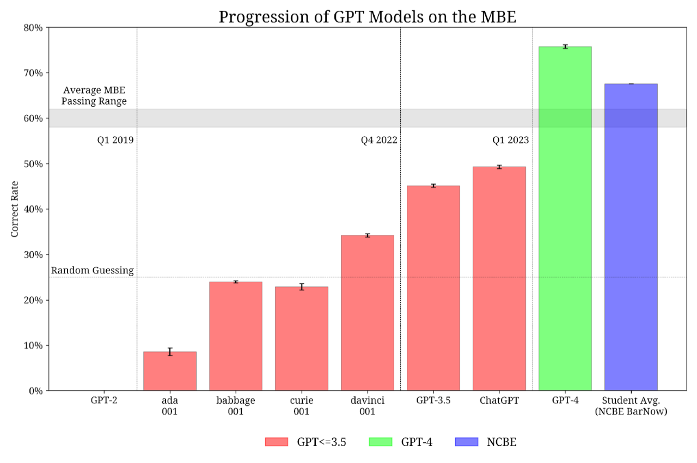

Exploring the evolution, impact, and vision of AI technologies.
Artificial Intelligence (AI) has evolved from early theoretical concepts in the 1950s to today's advanced machine learning systems that power tools like ChatGPT. Initially inspired by the idea that machines could simulate human reasoning, pioneers such as Alan Turing and John McCarthy laid the foundation for intelligent computing. The 1960s and 70s brought symbolic AI and expert systems, while the 1980s introduced neural networks. A period known as the "AI winter" slowed progress due to computational limits, but breakthroughs in the 2000s, fueled by massive data and improved algorithms, reignited the field. Modern AI now spans natural language processing, computer vision, and autonomous systems, transforming industries from healthcare to finance. Innovations like GPT series demonstrate AI's potential in understanding and generating human-like text, yet also highlight ongoing debates around ethics, bias, and societal impact. AI continues to challenge our understanding of intelligence itself, offering both unprecedented opportunities and critical responsibilities for humanity.
Self-Portrait

ChatGPT-4 vs Previous Versions
"AI will unlock new frontiers in creativity, science, and human potential." — Jane Doe
"The true promise of AI is in augmenting human intelligence, not replacing it." — John Smith
"Without careful oversight, AI can amplify biases and inequalities." — Alice Johnson
"AI is a tool of immense power; misuse could reshape society in unforeseen ways." — Robert Lee
You are an expert front-end designer and creative technologist, and a futuristic hippie. Create a single, fully responsive, cutting-edge HTML page about Artificial Intelligence that is visually striking, stylishly futuristic: try using boxes, colors with gradients, and make the nav bar a bar on the top of the screen.
Create a fancy custom horizontal gradient glowing navbar that includes links to:
-ai, since the CSS file will be appended onto the end of another CSS with unknown variable namesOutput the final result in the following order: